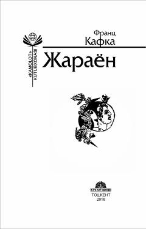

ЖFranz Kafkaning inson erki va taqdiri haqidagi mashhur falsafiy romani.
Ushbu kitob mashhur yozuvchi Franz Kafkaning dunyo adabiyotida chuqur iz qoldirgan «Jarayon» romani hamda «Otamga xat» asarini o'z ichiga oladi. Roman hech qanday aybsiz hibsga olingan bosh qahramon Josef K.ning sirli va murakkab taqdiri orqali insoniyat erki, qadri va jamiyatdagi adolat masalalarini o'rtaga tashlaydi. Vafo Fayzulloh tarjimasi va X. Do'stmuhammad so'zboshisi bilan nashr etilgan.